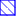

<!doctype html>
<html lang="en">
    <head>
        <meta charset="utf-8">
        <meta http-equiv="X-UA-Compatible" content="IE=edge">
        <meta name="viewport" content="initial-scale=1,user-scalable=no,maximum-scale=1,width=device-width">
        <meta name="mobile-web-app-capable" content="yes">
        <meta name="apple-mobile-web-app-capable" content="yes">
        <link rel="stylesheet" href="css/leaflet.css"><link rel="stylesheet" href="css/L.Control.Locate.min.css">
        <link rel="stylesheet" href="css/qgis2web.css"><link rel="stylesheet" href="css/fontawesome-all.min.css">
        <link rel="stylesheet" href="css/leaflet-search.css">
        <style>
        html, body, #map {
            width: 100%;
            height: 100%;
            padding: 0;
            margin: 0;
        }
        </style>
        <title></title>
    </head>
    <body>
        <div id="map">
        </div>
        <script src="js/qgis2web_expressions.js"></script>
        <script src="js/leaflet.js"></script><script src="js/L.Control.Locate.min.js"></script>
        <script src="js/multi-style-layer.js"></script>
        <script src="js/leaflet.rotatedMarker.js"></script>
        <script src="js/leaflet.pattern.js"></script>
        <script src="js/leaflet-hash.js"></script>
        <script src="js/Autolinker.min.js"></script>
        <script src="js/rbush.min.js"></script>
        <script src="js/labelgun.min.js"></script>
        <script src="js/labels.js"></script>
        <script src="js/leaflet-search.js"></script>
        <script src="data/Adresspunkte_1.js"></script>
        <script src="data/Puffer50m_2.js"></script>
        <script src="data/GebudeKlasse1_3.js"></script>
        <script>
        var map = L.map('map', {
            zoomControl:true, maxZoom:28, minZoom:1
        }).fitBounds([[50.90337353768075,6.808685071832793],[50.906970256947346,6.816508316903318]]);
        var hash = new L.Hash(map);
        map.attributionControl.setPrefix('<a href="https://github.com/tomchadwin/qgis2web" target="_blank">qgis2web</a> &middot; <a href="https://leafletjs.com" title="A JS library for interactive maps">Leaflet</a> &middot; <a href="https://qgis.org">QGIS</a>');
        var autolinker = new Autolinker({truncate: {length: 30, location: 'smart'}});
        L.control.locate({locateOptions: {maxZoom: 19}}).addTo(map);
        var bounds_group = new L.featureGroup([]);
        function setBounds() {
        }
        map.createPane('pane_OSMBW_0');
        map.getPane('pane_OSMBW_0').style.zIndex = 400;
        var layer_OSMBW_0 = L.tileLayer('http://tiles.wmflabs.org/bw-mapnik/{z}/{x}/{y}.png', {
            pane: 'pane_OSMBW_0',
            opacity: 1.0,
            attribution: '',
            minZoom: 1,
            maxZoom: 28,
            minNativeZoom: 0,
            maxNativeZoom: 18
        });
        layer_OSMBW_0;
        map.addLayer(layer_OSMBW_0);
        function pop_Adresspunkte_1(feature, layer) {
            var popupContent = '<table>\
                    <tr>\
                        <td colspan="2">' + (feature.properties['id'] !== null ? autolinker.link(feature.properties['id'].toLocaleString()) : '') + '</td>\
                    </tr>\
                    <tr>\
                        <td colspan="2">' + (feature.properties['Suchradius'] !== null ? autolinker.link(feature.properties['Suchradius'].toLocaleString()) : '') + '</td>\
                    </tr>\
                </table>';
            layer.bindPopup(popupContent, {maxHeight: 400});
        }

        function style_Adresspunkte_1_0() {
            return {
                pane: 'pane_Adresspunkte_1',
                radius: 6.0,
                opacity: 1,
                color: 'rgba(35,35,35,1.0)',
                dashArray: '',
                lineCap: 'butt',
                lineJoin: 'miter',
                weight: 1,
                fill: true,
                fillOpacity: 1,
                fillColor: 'rgba(0,0,0,1.0)',
                interactive: false,
            }
        }
        map.createPane('pane_Adresspunkte_1');
        map.getPane('pane_Adresspunkte_1').style.zIndex = 401;
        map.getPane('pane_Adresspunkte_1').style['mix-blend-mode'] = 'normal';
        var layer_Adresspunkte_1 = new L.geoJson(json_Adresspunkte_1, {
            attribution: '',
            interactive: false,
            dataVar: 'json_Adresspunkte_1',
            layerName: 'layer_Adresspunkte_1',
            pane: 'pane_Adresspunkte_1',
            onEachFeature: pop_Adresspunkte_1,
            pointToLayer: function (feature, latlng) {
                var context = {
                    feature: feature,
                    variables: {}
                };
                return L.circleMarker(latlng, style_Adresspunkte_1_0(feature));
            },
        });
        bounds_group.addLayer(layer_Adresspunkte_1);
        map.addLayer(layer_Adresspunkte_1);
        function pop_Puffer50m_2(feature, layer) {
            var popupContent = '<table>\
                    <tr>\
                        <td colspan="2">' + (feature.properties['id'] !== null ? autolinker.link(feature.properties['id'].toLocaleString()) : '') + '</td>\
                    </tr>\
                    <tr>\
                        <td colspan="2">' + (feature.properties['Suchradius'] !== null ? autolinker.link(feature.properties['Suchradius'].toLocaleString()) : '') + '</td>\
                    </tr>\
                </table>';
            layer.bindPopup(popupContent, {maxHeight: 400});
        }

        var pattern_Puffer50m_2_0 = new L.StripePattern({
            weight: 0.3,
            spaceWeight: 2.0,
            color: '#0c00ff',
            opacity: 1.0,
            spaceOpacity: 0,
            angle: 225
        });
        pattern_Puffer50m_2_0.addTo(map);
        function style_Puffer50m_2_0() {
            return {
                pane: 'pane_Puffer50m_2',
                stroke: false,
                fillOpacity: 1,
                fillPattern: pattern_Puffer50m_2_0,
                interactive: false,
            }
        }
        function style_Puffer50m_2_1() {
            return {
                pane: 'pane_Puffer50m_2',
                opacity: 1,
                color: 'rgba(12,0,255,1.0)',
                dashArray: '',
                lineCap: 'square',
                lineJoin: 'bevel',
                weight: 2.0,
                fillOpacity: 0,
                interactive: false,
            }
        }
        map.createPane('pane_Puffer50m_2');
        map.getPane('pane_Puffer50m_2').style.zIndex = 402;
        map.getPane('pane_Puffer50m_2').style['mix-blend-mode'] = 'normal';
        var layer_Puffer50m_2 = new L.geoJson.multiStyle(json_Puffer50m_2, {
            attribution: '',
            interactive: false,
            dataVar: 'json_Puffer50m_2',
            layerName: 'layer_Puffer50m_2',
            pane: 'pane_Puffer50m_2',
            onEachFeature: pop_Puffer50m_2,
            styles: [style_Puffer50m_2_0,style_Puffer50m_2_1,]
        });
        bounds_group.addLayer(layer_Puffer50m_2);
        map.addLayer(layer_Puffer50m_2);
        function pop_GebudeKlasse1_3(feature, layer) {
            var popupContent = '<table>\
                    <tr>\
                        <th scope="row">GML ID</th>\
                        <td>' + (feature.properties['GML ID'] !== null ? autolinker.link(feature.properties['GML ID'].toLocaleString()) : '') + '</td>\
                    </tr>\
                    <tr>\
                        <th scope="row">Geb. Höhe</th>\
                        <td>' + (feature.properties['Geb. Höhe'] !== null ? autolinker.link(feature.properties['Geb. Höhe'].toLocaleString()) : '') + '</td>\
                    </tr>\
                    <tr>\
                        <th scope="row">Rel.Höhe</th>\
                        <td>' + (feature.properties['Rel.Höhe'] !== null ? autolinker.link(feature.properties['Rel.Höhe'].toLocaleString()) : '') + '</td>\
                    </tr>\
                    <tr>\
                        <th scope="row">Funktion</th>\
                        <td>' + (feature.properties['Funktion'] !== null ? autolinker.link(feature.properties['Funktion'].toLocaleString()) : '') + '</td>\
                    </tr>\
                </table>';
            layer.bindPopup(popupContent, {maxHeight: 400});
        }

        function style_GebudeKlasse1_3_0(feature) {
            if (feature.properties['Rel.Höhe'] >= -5.000000 && feature.properties['Rel.Höhe'] <= 0.000000 ) {
                return {
                pane: 'pane_GebudeKlasse1_3',
                opacity: 1,
                color: 'rgba(35,35,35,1.0)',
                dashArray: '',
                lineCap: 'butt',
                lineJoin: 'miter',
                weight: 1.0, 
                fill: true,
                fillOpacity: 1,
                fillColor: 'rgba(215,25,28,1.0)',
                interactive: true,
            }
            }
            if (feature.properties['Rel.Höhe'] >= 0.000000 && feature.properties['Rel.Höhe'] <= 3.000000 ) {
                return {
                pane: 'pane_GebudeKlasse1_3',
                opacity: 1,
                color: 'rgba(35,35,35,1.0)',
                dashArray: '',
                lineCap: 'butt',
                lineJoin: 'miter',
                weight: 1.0, 
                fill: true,
                fillOpacity: 1,
                fillColor: 'rgba(255,255,192,1.0)',
                interactive: true,
            }
            }
            if (feature.properties['Rel.Höhe'] >= 3.000000 && feature.properties['Rel.Höhe'] <= 10.000000 ) {
                return {
                pane: 'pane_GebudeKlasse1_3',
                opacity: 1,
                color: 'rgba(35,35,35,1.0)',
                dashArray: '',
                lineCap: 'butt',
                lineJoin: 'miter',
                weight: 1.0, 
                fill: true,
                fillOpacity: 1,
                fillColor: 'rgba(26,150,65,1.0)',
                interactive: true,
            }
            }
        }
        map.createPane('pane_GebudeKlasse1_3');
        map.getPane('pane_GebudeKlasse1_3').style.zIndex = 403;
        map.getPane('pane_GebudeKlasse1_3').style['mix-blend-mode'] = 'normal';
        var layer_GebudeKlasse1_3 = new L.geoJson(json_GebudeKlasse1_3, {
            attribution: '',
            interactive: true,
            dataVar: 'json_GebudeKlasse1_3',
            layerName: 'layer_GebudeKlasse1_3',
            pane: 'pane_GebudeKlasse1_3',
            onEachFeature: pop_GebudeKlasse1_3,
            style: style_GebudeKlasse1_3_0,
        });
        bounds_group.addLayer(layer_GebudeKlasse1_3);
        map.addLayer(layer_GebudeKlasse1_3);
        var baseMaps = {};
        L.control.layers(baseMaps,{'Gebäude Klasse 1<br /><table><tr><td style="text-align: center;"></td><td>-5 - 0</td></tr><tr><td style="text-align: center;"></td><td>0 - 3</td></tr><tr><td style="text-align: center;"></td><td>3 - 10</td></tr></table>': layer_GebudeKlasse1_3,' Puffer (50m)': layer_Puffer50m_2,' Adresspunkte': layer_Adresspunkte_1,"OSM BW": layer_OSMBW_0,}).addTo(map);
        setBounds();
        map.addControl(new L.Control.Search({
            layer: layer_Adresspunkte_1,
            initial: false,
            hideMarkerOnCollapse: true,
            propertyName: 'id'}));
        document.getElementsByClassName('search-button')[0].className +=
         ' fa fa-binoculars';
        </script>
    </body>
</html>
